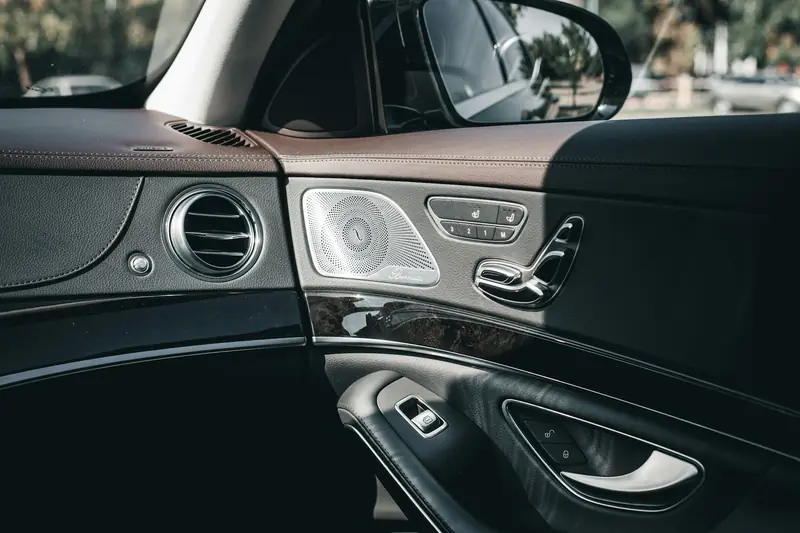
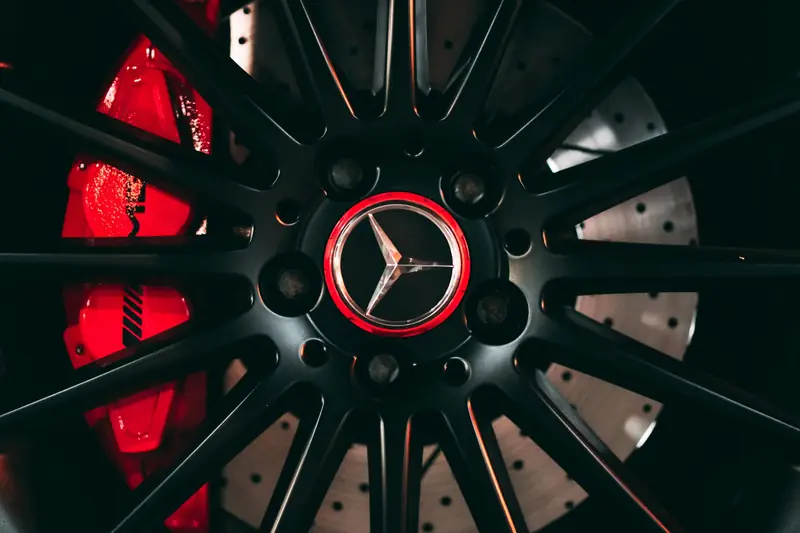
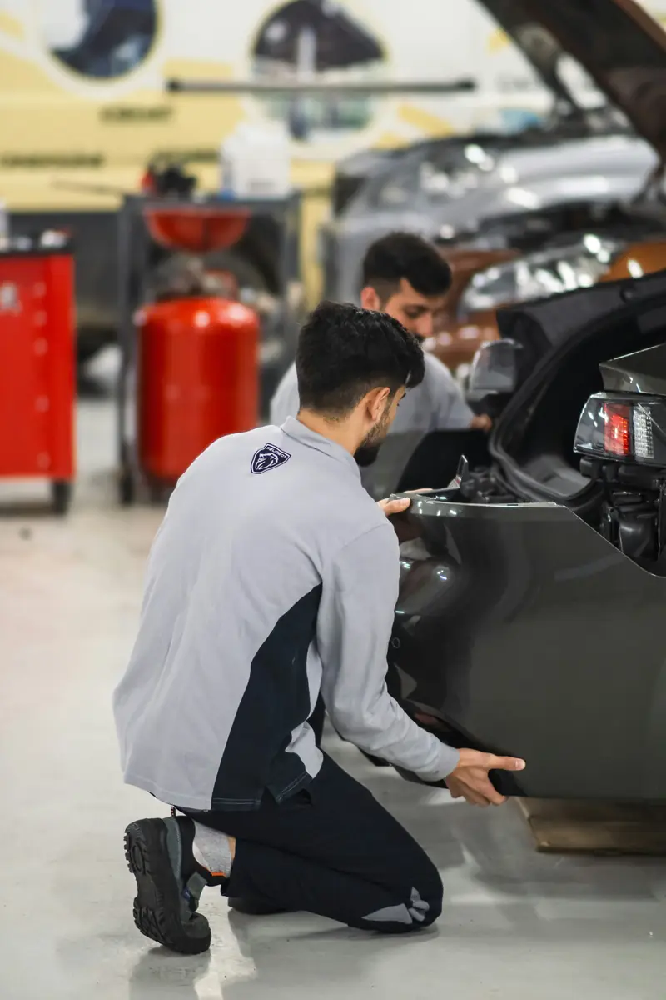
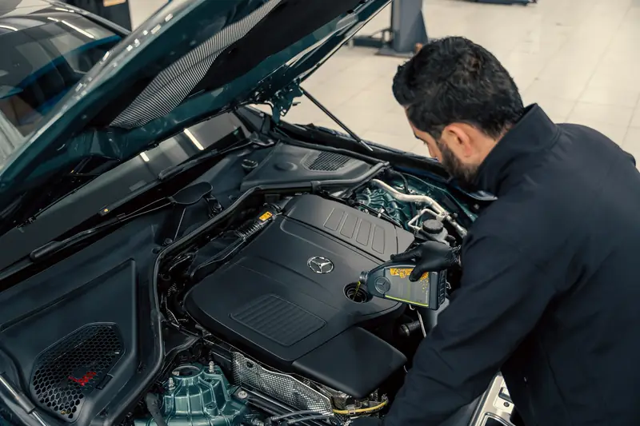
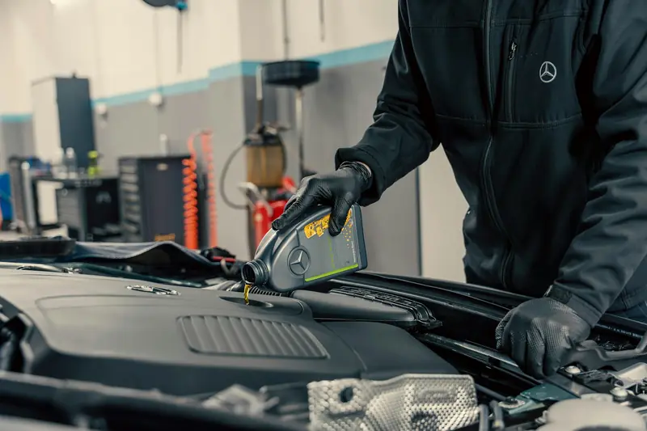
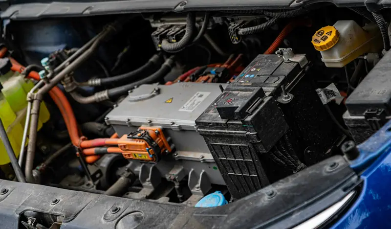

Group 01 / 02
Cooling and Refrigerant Services
These services cover the parts that create cold air and keep refrigerant sealed inside the system.
5 servicesYou start the car at noon and the vents blow warm air. Or the cabin cools on the highway, then turns hot again at every traffic light. In Abu Dhabi, a weak AC is more than uncomfortable. We find exactly why your Mercedes isn’t cooling, then fix it properly.
AC problems usually start small. Here is what common symptoms point to.
Likely causeLow refrigerant, a leak or a failed compressor
Book soonLikely causeWeak cooling fan or blocked condenser
Book soonLikely causeBlocked cabin filter or failing blower motor
Book within daysLikely causeBacteria or mould on the evaporator
Book within daysLikely causeCompressor or clutch wear
Book soon. It can damage the systemLikely causeBlend door actuator or zone sensor fault
Book within daysLikely causeControl unit or electrical fault
Book within daysLikely causeRefrigerant and oil leak
Book soonHeat in Abu Dhabi doesn’t wait. At 45°C outside, a closed car in direct sun can reach 65 to 75°C inside within an hour, with the dashboard and steering wheel reaching 80 to 95°C. A weak AC struggles to pull that heat out, and it works harder every summer.
Small faults also grow quickly. A slow leak lets moisture in, which damages the compressor. A blocked condenser makes the compressor run hotter. Fixing the first fault early usually costs far less than replacing parts later.
Your AC also affects resale value. Neglecting it can cost roughly AED 9,000 on a car listed around AED 67,000, according to 2026 CarSwitch data. Buyers in the UAE check the AC first, especially in summer.
From a quick regas to a full climate system repair, we handle every part of your Mercedes AC.
These services cover the parts that create cold air and keep refrigerant sealed inside the system.
5 servicesWe test high and low side pressures, read climate control fault codes and measure vent temperatures. This shows the real cause before any part is replaced.
Ask about thisWe recover old refrigerant, vacuum the system to remove moisture and refill the exact amount your model needs. Older models use R134a, while newer ones use R1234yf.
Ask about thisWe find leaks with UV dye, electronic detectors and nitrogen pressure tests. Then we replace the faulty seal, pipe or component before refilling.
Ask about thisMercedes compressors use control valves that can fail before the compressor itself. We test the valve and clutch first, and replace the compressor only when needed.
Ask about thisThe condenser sits behind the front grille, where stones and sand damage it. We replace leaking or blocked condensers and flush the system to protect the new part.
Ask about this
These services fix how cold air reaches you, how each zone is controlled and how clean the air is.
5 servicesA leaking evaporator or stuck expansion valve causes weak or uneven cooling. We test both and replace faulty parts, including dashboard work when the evaporator needs access.
Ask about thisWeak airflow or a fan stuck on one speed usually points to the blower motor or its regulator. We test both and replace the faulty part.
Ask about thisBlend door actuators and sensors control each climate zone. When one side blows warm, we test and replace the failed actuator or sensor and recalibrate the system.
Ask about thisAbu Dhabi dust clogs cabin filters fast and reduces airflow. We fit a fresh filter and disinfect the evaporator to remove musty smells and bacteria.
Ask about thisEQ and hybrid models use high-voltage electric compressors that also cool the battery. We service them with the correct safety procedures and non-conductive compressor oil.
Ask about thisEvery Mercedes AC system is built differently. Knowing yours helps us repair it correctly.
Mercedes uses R1234yf in its latest models, including the current S-Class. The brand also built an extra safety feature into these systems: in a severe frontal crash, a gas generator releases inert argon onto hot engine parts to reduce fire risk. This is why we always check the refrigerant label under the bonnet and use matching equipment.
Your AC doesn’t just cool the cabin. It also removes heat stored in the seats, dashboard and glass. In Germany, ADAC testing found an unprotected car in midday sun reached 50°C inside after just 30 minutes. In Abu Dhabi summers, temperatures go much higher.
That heat load means the compressor runs longer, at higher pressure, for months at a time. Seals and hoses age faster, condensers clog with dust, and cabin filters block quickly. Many AC faults that take years to appear in Europe show up within a few summers here.
The right fix depends on what the diagnosis finds. This is how we help you choose.
Regas
WhyRestores the correct refrigerant amount
Leak repair, then regas
WhyStops the refrigerant escaping again
Cabin filter or blower motor
WhyAirflow, not cooling, is the problem
Compressor repair or replacement
WhyRestores the heart of the system
Compressor, flush and drier replacement
WhyProtects the new parts from damage
An AC check in March or April avoids the summer rush at workshops.
Abu Dhabi dust blocks filters fast and cuts airflow.
Recirculated air is cooler, so the AC works less hard.
A cooler cabin reduces the load on the compressor.
Using it every week keeps seals lubricated and helps prevent leaks.
Sand and debris on the condenser reduce cooling at idle.
Early leak repair costs far less than a new compressor.
Five clear steps, the same on every job, so you always know what is happening and why.
We test system pressures, measure vent temperatures and read climate fault codes. This shows the real cause before any part is replaced.
We use UV dye, electronic detectors or a nitrogen test to locate leaks. Even small leaks are found before we refill the system.
You get a clear report and a line-by-line quote first. No work begins until you approve it, and we call before any extras.
We replace faulty parts and refill with the correct refrigerant and oil. The exact amount for your model is weighed in, not guessed.
We check vent temperatures at idle and on a road test. You get your car back with a short report of all work done.
MOIAT-certified, Mercedes-focused and rated 4.5 from 765 Google reviews. Here is what that means for your car.
Our team works on Mercedes climate systems every day. We know every setup, from THERMATIC dual-zone to THERMOTRONIC and EQ electric AC.
We find and fix leaks before refilling the system. This stops you paying for refrigerant that escapes again within weeks.
We check your refrigerant label before any work begins. Then we use dedicated R134a or R1234yf equipment, so gases are never mixed.
We use Mercedes-compatible software to read the climate control unit. It lets us test sensors, actuators and the compressor control valve accurately.
Your quote shows genuine and OE-quality part options side by side. You can see the price difference clearly and choose what suits you.
You receive a line-by-line quote before any work begins. If we find anything extra during the repair, we call you first.
It depends on the fault and the model. A regas costs far less than a compressor or evaporator replacement, and R1234yf costs more than R134a. We give you a fixed quote after diagnosis.
A regas or cabin filter change usually takes about an hour. Compressor or condenser work takes most of a day. Evaporator replacement takes longer, as the dashboard often needs removing.
At speed, air flows through the condenser naturally. At idle, the cooling fan has to do that job. A weak fan, a blocked condenser or low refrigerant usually causes this problem.
A healthy, sealed system shouldn’t need frequent regassing. If cooling fades quickly after a regas, there is a leak that needs fixing first. We recommend an AC check every year before summer.
Moisture on the evaporator allows bacteria and mold to grow. A new cabin filter and an evaporator disinfection usually remove the smell.
No. A regas only refills the system. If there is a leak, the refrigerant escapes again, so we find and repair the leak first.
Yes. EQ and hybrid models use high-voltage electric compressors that also cool the battery. We service them with the correct safety procedures and approved compressor oil.

Brake RepairPads, discs, DOT 4 Plus fluid, ABS and AMG brakes.Transmission Repair7G, 9G-TRONIC and DCT gearbox repair and rebuilds.Engine RepairTiming chains, head gaskets, leaks, turbos and AMG V8s.PaintingPaint-code matching, panel paint, resprays and ceramic coating.
Body ShopCollision, dent, bumper and aluminium repair with ADAS calibration.
DiagnosticsXENTRY full-module scans, live data and warning lights.
Oil ChangeMB 229-approved oil, genuine filters and ASSYST reset.
Electrical RepairBattery, SAM module, wiring, 48V and lighting faults.Don’t wait for the next 45°C afternoon to find out your AC can’t keep up. Book an AC check today and get a clear answer on what your Mercedes needs. Our Mercedes AC repair team in Abu Dhabi is ready to help.